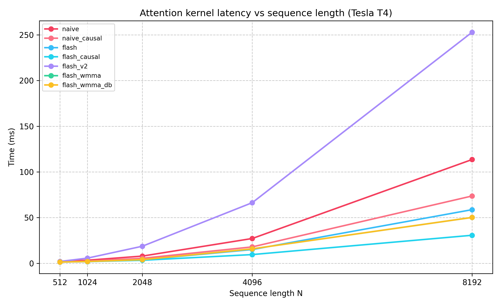
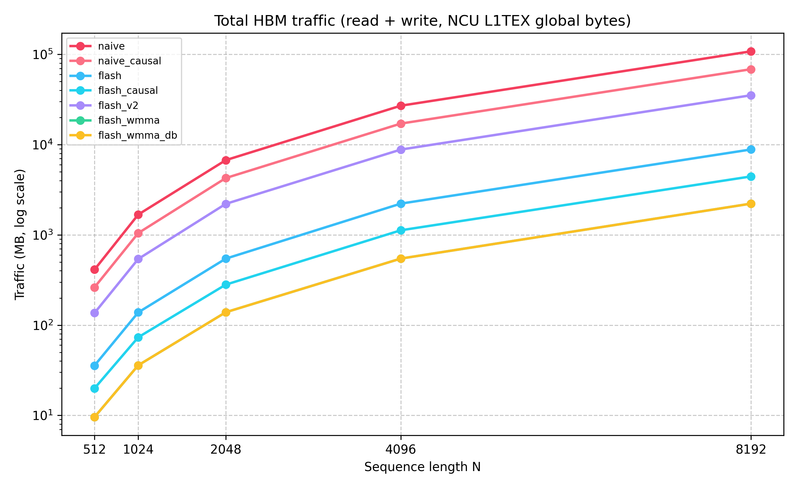

A bare-metal implementation of IO-aware attention on an NVIDIA Tesla T4 — online softmax, shared-memory tiling, and O(N) HBM traffic.
The core operation in Transformers is scaled dot-product attention:
where $Q, K, V \in \mathbb{R}^{N \times d}$. The naive implementation materialises the full $N \times N$ score matrix $S = QK^\top / \sqrt{d}$ in HBM (GPU DRAM), reads it back for softmax, and reads it again to compute $PV$. This incurs $\Theta(N^2)$ HBM reads and writes, making it memory-bandwidth–limited even for modest sequence lengths.
3 kernel launches, 3+ HBM round-trips for the $N\times N$ matrix.
Tiles Q, K, V into SRAM. $N\times N$ matrix never leaves the chip.
For $d = 64$, our tile sizes $B_r = B_c = 32$ occupy $(B_r + 2B_c)\cdot d \cdot 4 = 24\,576$ B = 24 KB — comfortably within the 48 KB limit.
Standard softmax requires two passes over a row: one to find the max $m$, one to exponentiate & normalise. With tiling we can't afford to see the whole row at once. The key insight is that the denominator can be updated incrementally:
After all $T_c$ K/V tiles: $O_i \leftarrow O_i / \ell^{(T_c)}_i$. The running state $(m_i, \ell_i, O_i)$ lives entirely in registers — no HBM writes for intermediate results.
Watch a single Q tile ($i=0$) iterate over all K/V tiles. Click Next Step to advance.
All experiments run on an NVIDIA Tesla T4 (sm_75), $d = 64$, averaged over 20 iterations with 5 warmup runs. HBM traffic measured with NVIDIA Nsight Compute (NCU).


Toggle between the naive three-kernel baseline and the FlashAttention tiled kernel. The fundamental difference: naive writes $S \in \mathbb{R}^{N \times N}$ to HBM; flash keeps everything in SRAM registers.
// ── Kernel 2: row-wise softmax (in HBM) ──────────────────────────────────
// Reads and writes the full N×N matrix S — O(N²) HBM traffic
__global__ void softmax_kernel(float* S, int N) {
int row = blockIdx.x * blockDim.x + threadIdx.x;
if (row >= N) return;
float* row_ptr = S + row * N;
// Pass 1: find row max (numerical stability)
float mx = -FLT_MAX;
for (int j = 0; j < N; ++j)
mx = fmaxf(mx, row_ptr[j]); // reads N floats from DRAM
// Pass 2: exponentiate and sum
float sum = 0.0f;
for (int j = 0; j < N; ++j) {
row_ptr[j] = expf(row_ptr[j] - mx); // read + write N floats to DRAM
sum += row_ptr[j];
}
// Pass 3: normalize
float inv = 1.0f / sum;
for (int j = 0; j < N; ++j)
row_ptr[j] *= inv; // read + write N floats to DRAM
}
// Total: ~4·N² float reads + ~2·N² float writes per softmax call// ── Online softmax rescale inside FlashAttention kernel ──────────────────
// Runs entirely in registers — the N×N matrix never exists in HBM
for (int j = 0; j < Tc; ++j) {
// ... load K_j, V_j tiles into SRAM ...
// Compute S_row = Q[q_idx] · K_j^T / sqrt(d) (BC dot products)
float S_row[BC], m_tilde = -FLT_MAX;
for (int jj = 0; jj < bc_actual; ++jj) {
float dot = 0.0f;
for (int k = 0; k < D; ++k)
dot += Q_smem[t][k] * K_smem[jj][k];
S_row[jj] = dot * scale;
m_tilde = fmaxf(m_tilde, S_row[jj]);
}
// P_tilde = exp(S_row - m_tilde), l_tilde = sum(P_tilde)
float l_tilde = 0.0f;
for (int jj = 0; jj < bc_actual; ++jj) {
S_row[jj] = expf(S_row[jj] - m_tilde);
l_tilde += S_row[jj];
}
// ── Online rescale: no global memory access needed ────────────────
float m_new = fmaxf(m_i, m_tilde);
float alpha = expf(m_i - m_new); // rescale old contribution
float beta = expf(m_tilde - m_new); // rescale new contribution
for (int k = 0; k < D; ++k) {
float pv_k = 0.0f;
for (int jj = 0; jj < bc_actual; ++jj)
pv_k += S_row[jj] * V_smem[jj][k];
O_acc[k] = alpha * O_acc[k] + beta * pv_k; // update in registers
}
m_i = m_new;
l_i = alpha * l_i + beta * l_tilde;
}
// Final write: O[q_idx] = O_acc / l_i ← ONE write to HBM per row